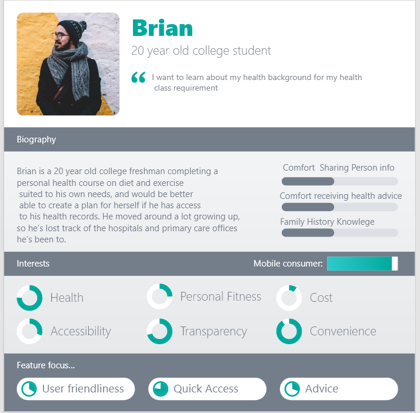
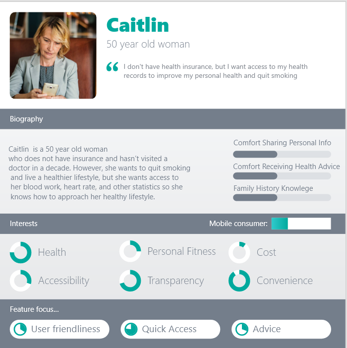
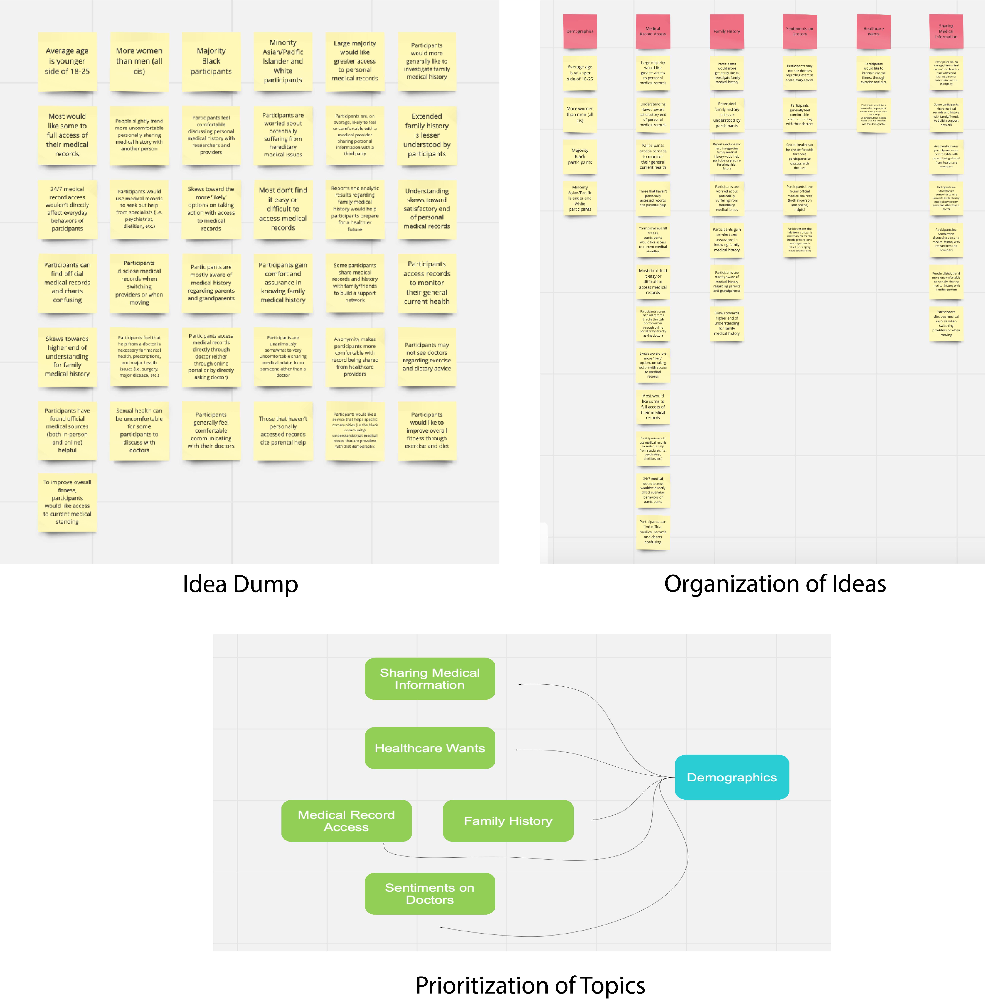
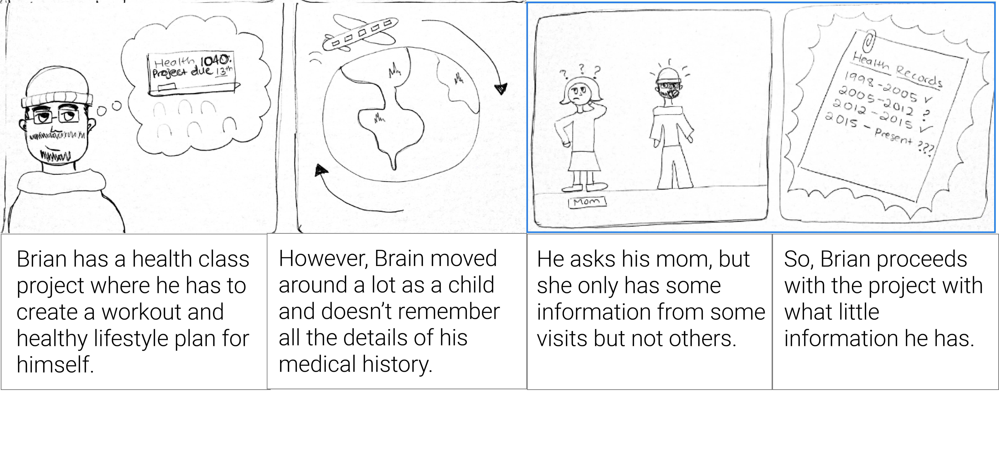
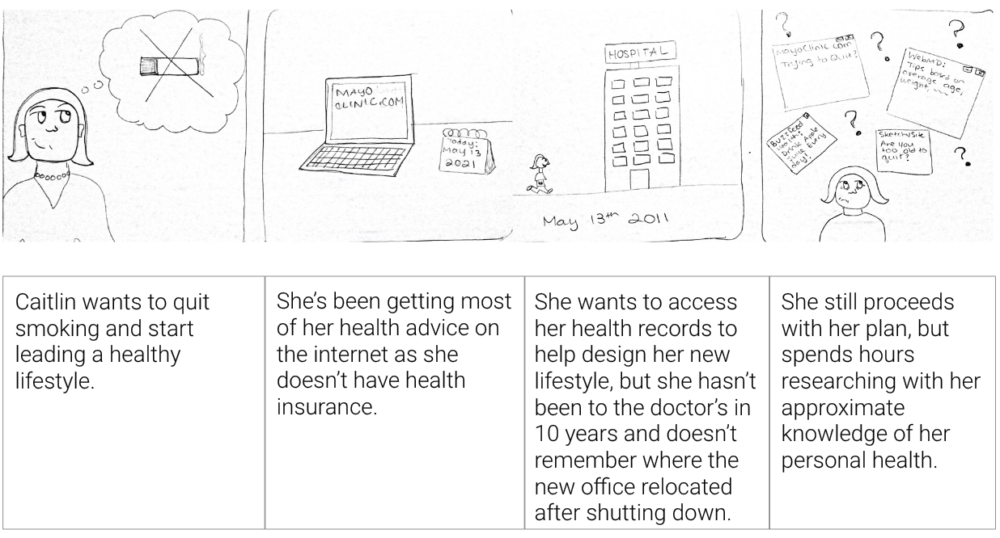
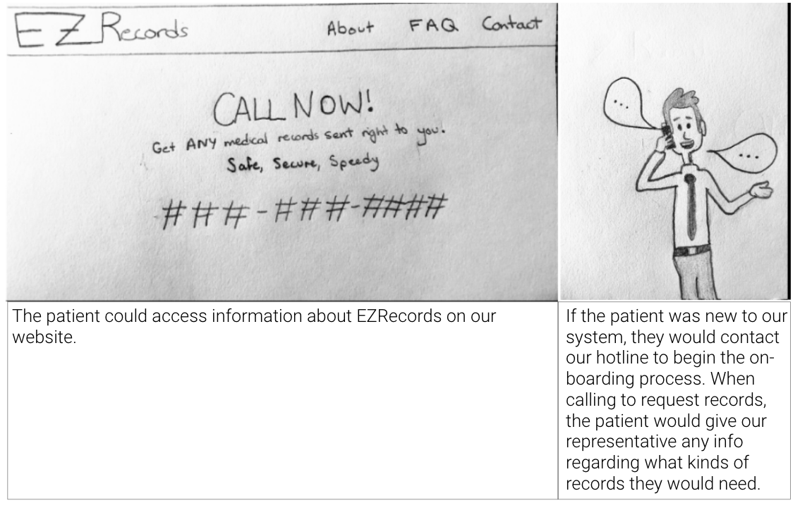
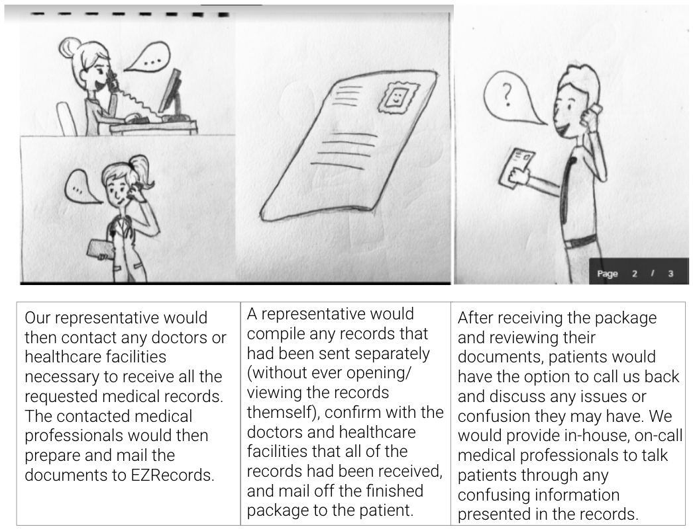
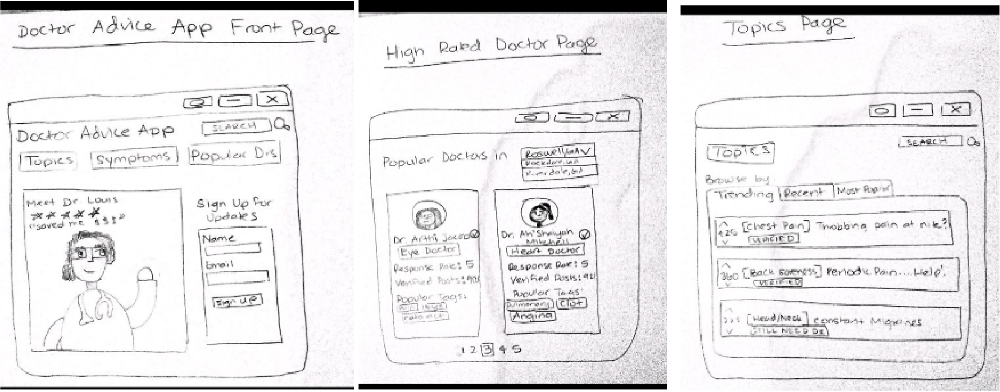

In our current system, too many are left without the resources to prepare for a healthy future. EZRecords seeks to make accessing medical records and finding adequate healthcare easy and accessible for everyone. We hope to provide our users with a safe and reliable way of finding the providers that are affordable, trustworthy, and local.
INFORMATION
DURATION: May 2020 - July 2020
LOCATION: Georgia Tech, Atlanta, GA
MEMBERS: Khadijat Amoo • Sana Baig • Anirudh Thatavarty
ROLE: UX Designer • UX Researcher
This space is intentionally left blank.
PROBLEM SPACE
The current healthcare system in the United States has left millions of people without access to immediate answers for their health problems, as well as access to their own health records and documents, which leads to miscommunication between patients and providers and a delay in feedback for time-sensitive responses from healthcare centers. This problem can affect people differently based on socioeconomic background, age, literacy, internet access, ability, etc. On top of this, the act of retrieving health documents can be a daunting task if one has had different healthcare providers, and there is sometimes unnecessary red tape making the process even more expensive and time-consuming. Lastly, interpreting these documents for personal use can be difficult without background knowledge, which could prevent future health problems.
Our core user base are youth between the ages of 18 and 25. This group is not only underserved in terms of healthcare resources, but is also the most likely demographic to utilize technology to access their medical records and find appropriate providers.
Personas


Brian represents a user who falls into our intended demographic. This is the persona that we find will be most likely to use EZRecords. However, while our core demographic is 18 – 25 year olds, we recognize that other groups may find EZRecords helpful, as well. We have designed with not only Brian in mind, but also users such as Caitlin who fall outside of our intended demographic.
PRELIMINARY RESEARCH
GATHERING DATA
After determining our problem space and target audience, our next step was to gather data regarding our demographic’s attitudes and opinions towards their current healthcare experiences. We used two methods for data collection:
Interviews: Each group member of EZRecords selected an individual to interview for a total of four interviews. Using a script, we asked open-ended questions allowing the user to give free responses that provided varied and detailed information.
Surveys: We surveyed 50 young adults between the ages of 18 and 25 with various ethnic backgrounds. Our question topics included demographics and family background information, past medical experiences, future healthcare-related actions, and privacy.
DATA ANALYSIS
After collecting and reviewing all of the data from our interviews and surveys, we analyzed the data by using affinity diagramming. Our first step was to generate an “idea dump” in a rapid-fire brainstorming session. We used the online program Miro (www.miro.com) to create virtual “post-it notes” that recorded ideas or facts regarding the data. The notes included basic demographic facts, trends in participants’ opinions and sentiments, and participant prioritization of needs and wants. Team members pulled from notes they had independently generated before the exercise as well as new connections or ideas they found during the group brainstorming. We then organized our notes into categories and prioritized the topic list in terms of our users’ needs and wishes.

Key Insights
We believe that the biggest takeaway from our research process was that people wanted to have access to their medical records, but at a very low cost. They are not willing to have their data shared with a third-party, they are not willing to have the data on the cloud, and they also do not want to receive any medical information or analytics from someone who is not a doctor. There are also just as many people who would want to act on the information they get from medical records as there are people who wouldn’t do anything or are unlikely to act on it.
Evaluating the Current System
Strengths
• If you live close by to your doctor/hospital, then you can access your records whenever you’d like.
• If your healthcare workers are competent, then access to records is easy and meaningful.
• No third party can view your documents, thus there is no issue with hacking. The data is strictly confidential between the doctor and the patient.
• Any information and documents a doctor gives to the patient is deemed trustworthy, and whatever actions a doctor says to take are generally trusted and followed.
Weaknesses
• If you don’t live close to your doctor or you don’t have the necessary resources to see the doctor/ hospital frequently, then getting records is an incredibly difficult task and requires a lot of patience, time, and resources.
• If you need to switch doctors, switch insurance, or go to a different hospital, then all of your data either has to come from memory or you must request the data from the place it is located, which can take days, even weeks to request and receive. This is especially costly for those people in lower socioeconomic brackets and people in critical health conditions.
• Actual medical records are extremely confusing to read and hard to understand. Often times a doctor or medical professional is needed to translate jargon. This requires an input of resources into accessing medical records at the office, which is a problem for both the patient and the doctor.
• Any information and documents a doctor gives to the patient is deemed trustworthy, and whatever actions a doctor says to take are generally trusted and followed.
USER SCENARIOS
Scenario 1: Brian

Scenario 2: Caitlin

This space is intentionally left blank.
DESIGN
DESIGN ALTERNATIVES
Express Mail Delivery Service
With this service, a user can request their records via mail and securely receive documents through the United States Postal Service mailing. This is extremely important for ensuring security and privacy for our users.


Example Scenario: This service could easily fit the scenario of a student who moved around a lot as a kid needing to access records for a school health project. Instead of tracking down where all of his records are located, the student could call our hotline, describe what information he needed, and have a representative do the grunt work of finding the correct documents. The student would then be shipped a neat package containing all the pertinent information.
Strengths
• This option greatly lessens security risks as documents are mailed straight to patients without every being viewed by a third party.
• Less effort is required of the patients as representatives do the grunt work of tracking down documents.
• This increases accessibility of records for those who may have trouble accessing traditional healthcare facilities.
Weaknesses
• There exists a risk of documents getting lost in the mail system.
• As with traditional mail and delivery services, there could exist a risk of delayed document deliveries.
• We would have to determine a way of granting representatives medical access to patients, as most healthcare facilities have strict privacy rules about who may access documents.
EZAdvice
With EZAdvice, users can post on message forums and contact verified doctors and nurse practitioners that specialize in their area of need to give advice or direction about their ailment.

The app starts off with a list of doctors that can be contacted and their various ratings and comments about what they specialize in. This gives users a trusted list of contacts that they can access to get more medical information. They can also look through various topics, symptoms, and discussion pages to understand more about their health.
In the topics page, they can look through trending topics, recent topics, and most popular topics overall that are trending in the app’s community. They can also see answers, as it is like a discussion forum, and see which answers are the most upvoted, which answers are the most credible and have the best reviews, and it also provides a forum for doctors to reply and people to view that response. If the case is personal, then doctors have an opportunity to private chat with the patient.
The doctors page allows you to look based on a geographical region who are the best doctors in the area and their speciality, as well as their reviews based on users of the app. The app also allows for tags which can help the user find doctors based on specific keywords.
Example Scenario: 24 year-old Steve is having some stomach pain. He just graduated college, and just started a new job. He cannot afford to take a day off just yet, and he doesn’t have much money to go see an urgent care or even pay the copay for a doctor’s visit. He wants a quick way to understand what is going on and get in contact with a doctor. He accesses the EZRecords - EZAdvice app, goes to topics, and searches for similar symptoms. He finds 5-star rated answers to his problem, as well as doctors’ comments and suggested solutions. There is also a related community discussion forum where he can view different remedies that worked for other people. He tries some of them, and they work. Steve feels much better, and goes back to work the next day.
Strengths
• There are no privacy issues asusers only post what they want to. They don’t have to enter any biometric or sensitive data they would rather keep private.
• There will always be someone available using this app, which provides 24/7 help for users.
• Discussion forums and direct advice give users a sense of community and decreases feelings of aloneness.
Weaknesses
• Because this is solely an advice forum and marketplace for various doctors and medical professionals, the services lacks personalization.
• This service doesn’t provide record access. This solely provides advice and doctor information.
• All answers must be highly vetted, as users must rely on the trustworthiness of sources and information.
DESIGN SOLUTION
FindMyDoctor
The concept of this prototype is that once a person receives their records, they can upload them straight to the FindMyDoctor app and access them as they switch doctors, move across the country, or for any other purpose that might arise. We feel that this solution best addresses our problem space as it aids young people in accessing, understanding, and acting on their own medical records and histories. The following prototype provides a solution for uploading records and storing them all in one place. There is no third-party carrier that has must retrieve records from a healthcare facility. Patients can upload whatever and whenever they desire. One important issue with this idea is the task of securing records in a cloud-based server. We acknowledge that this could be a large roadblock in implementation. However, we feel that the pros outweigh the cons of this solution